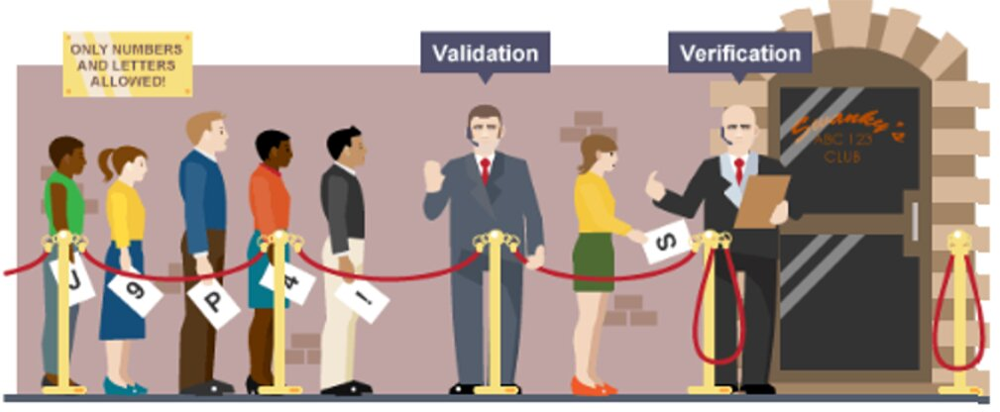

Validation & Verification
Before data is processed, we must ensure it is both reasonable (validation) and correct (verification). These are two different but complementary processes that prevent errors from entering a system.
Learning Objectives
- 11.1.2.5 Explain the difference between verification and validation
Conceptual Anchor
The Airport Security Analogy
Validation is like the X-ray scanner — it checks whether your bag contains allowed items (reasonable data), but it can't tell if it's your bag. Verification is like checking your passport photo against your face — it confirms the data is correct and belongs to you. Both are needed for security.
Rules & Theory
Part 1: Data Validation & Verification
When taking user input, the system must perform checks to prevent crashes and ensure data integrity. Validation checks that data is reasonable, while verification checks that it is correct (matches the original).

Types of Data Validation Checks
| Check Type | What It Does | Example |
|---|---|---|
| Range check | Value falls within a specified boundary of accepted values. | Mark must be between 0 and 100. |
| Limit check | Similar to range check, but only checks one boundary limit. | Age must be > 18. |
| Type/Character check | Data is of the correct data type (no invalid characters). | Age must be an integer, not text. |
| Length check | Data has the correct number of characters. | Password must be at least 8 characters. |
| Presence check | A required field is not left empty (actually present). | Username field cannot be blank. |
| Format/Picture check | Data matches a specific predetermined pattern. | Date must follow DD/MM/YYYY. |
| Consistency check | Checks if two or more fields correspond (tie up) with each other. | Title is "Mr" and Gender is "Male". |
| Lookup table | Value must exist in a predefined list of acceptable values. | Selecting from 7 days of the week. |
| Check digit | Extra digit calculated from others to detect data entry errors. | Barcodes in supermarkets, ISBN. |
Methods of Data Verification
| Method | How It Works | Disadvantages |
|---|---|---|
| Double entry | User enters data twice. Computer compares both copies (e.g., "Confirm password"). | Doubles the workload; costs more time and money. |
| Proofreading (Visual check) | User reviews entered data on screen against the original document before submission. | Time-consuming; prone to human error. |
Data Validation (Craig'n'Dave)
A clear, professional explanation of Data Validation techniques and why programs must be robust.
Part 2: Software Validation & Verification
In Software Engineering, V&V refers to checking the software product itself during the development life cycle.
The Golden Rule of Software V&V
Verification: "Are we building the system right?"
(Ensures the software matches the requirement and design specifications).
Validation: "Are we building the right system?"
(Ensures the software actually solves the user's problem and meets customer expectations).
| Feature | Software Verification | Software Validation |
|---|---|---|
| Activities involved | Reviews, meetings, and manual inspections of documents. | Testing (Black box, White box, Gray box). |
| Who carries it out? | Quality Assurance (QA) team. | Testing team (and end-users). |
| Code Execution | Execution of code is NOT required. | Execution of code IS required. |
| Timing in SDLC | Carried out before Validation. | Carried out after Verification. |
| Cost of errors | Errors caught here cost less to fix. | Errors caught here cost more to fix. |
Worked Examples
1 Limit Check + Type Check (Pseudocode)
REPEAT
OUTPUT "Enter your age (must be over 18): "
INPUT age
// Assuming 'age' is checked for integer type implicitly
IF age <= 18 THEN
OUTPUT "Invalid! You must be older than 18."
ENDIF
UNTIL age > 18
OUTPUT "Valid age entered."2 Double Entry Verification (C++)
#include <iostream>
#include <string>
using namespace std;
int main() {
string email1, email2;
do {
cout << "Enter email: ";
cin >> email1;
cout << "Confirm email: ";
cin >> email2;
if (email1 != email2) cout << "Emails do not match!\n";
} while (email1 != email2);
cout << "Email verified." << endl;
return 0;
}Common Pitfalls
Confusing Validation with Verification
Students often mix them up. Remember: Validation = automated + reasonable. Verification = correctness + matches original. A value can be valid but incorrect (age = 25 when it should be 52).
Mixing Data V&V with Software V&V
Data validation checks user inputs (e.g., passwords). Software validation checks if the final built application is actually what the client asked for. Read exam questions carefully to know which context is being asked.
Exam Tips
- Always state the type of validation check (range, format, length, etc.).
- For verification, specify the method (double entry, visual check) and mention it requires human input.
- If asked to define Software Validation, always use the phrase: "Ensures the software meets customer expectations."
Tasks
List 3 types of Data Validation checks and 2 methods of Data Verification.
A registration form asks for a phone number. Which validation checks would be appropriate? Explain why each check is needed.
A developer is reading through the design documents to ensure the code logic is correct before testing. Is this Software Verification or Software Validation?
A company built a beautiful, bug-free calculator app exactly according to the specification document. However, the client actually wanted a calendar app. Did the project fail Software Verification or Software Validation? Explain.
Self-Check Quiz
Q1: Which validation check ensures a password is at least 8 characters?
Q2: What is a major disadvantage of Double Entry Verification?
Q3: Can valid data still be incorrect? Give an example.
Q4: "Are we building the right system?" — does this refer to Software Validation or Verification?